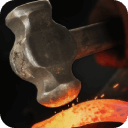

Forge Hammer
Free browser addon for Forge of Empiresmaintained by outoftheline and Beelzebob666
Help, I need information!
We will extend this page as we go and added a wiki on GitHub
which we'll work on when we find the time. If you want to, you can contribute to the wiki!
Many thanks to Amber for adding documentation to the wiki already!
You can also ask questions on Discord
Click on a menu item to open the wiki page
I found a bug!
Please report issues on GitHub or on Discord. Thank you!
Data
This addon is best enjoyed if you do not clear your browser data regularly, as it saves game
data locally, so on your device only, and has a lot of settings that would be reset everytime
you do
so.
That being said: Clearing only your cache is fine. Data is stored in
a local database (IndexedDB) and localStorage, not in the cache.
You can also save your data to your computer before deleting any browser data in  Settings and reimport it afterwards!
Settings and reimport it afterwards!
No data is sent to external websites.
 I don't receive any notifications, how can I
fix that?
I don't receive any notifications, how can I
fix that?
Create an entry with a title and a date in the
Alerts
module and hit the Preview button.
If nothing happens, notifications are probably not allowed in your OS (Windows/Mac etc) or in
your browser.
Check those settings.